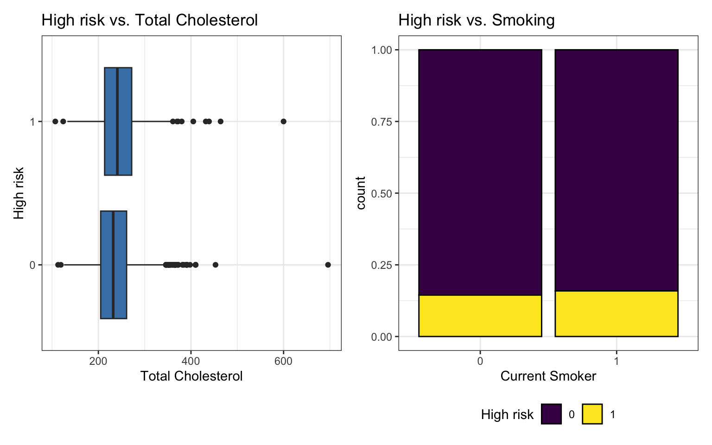
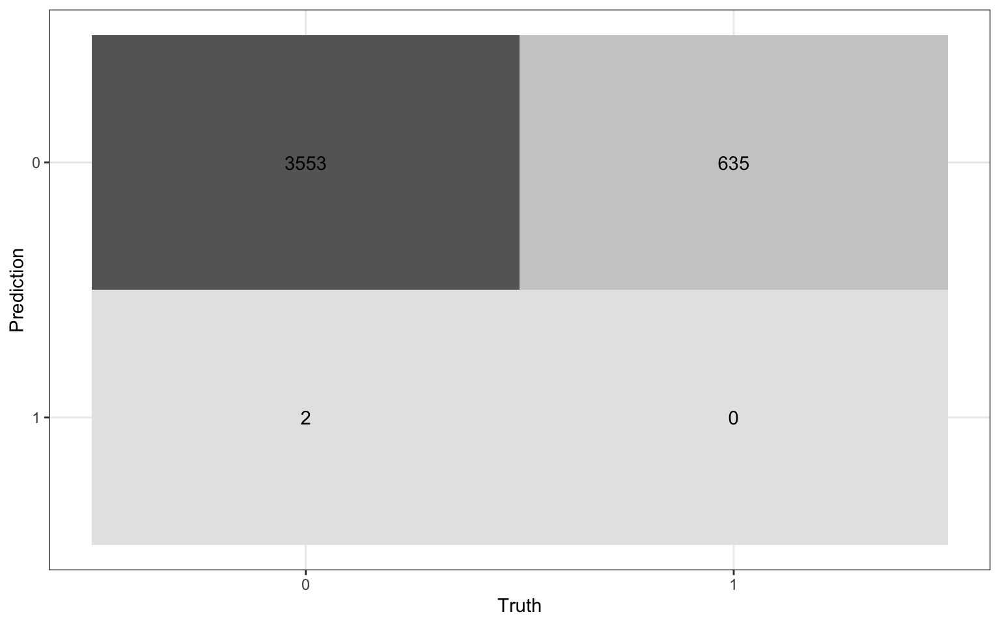
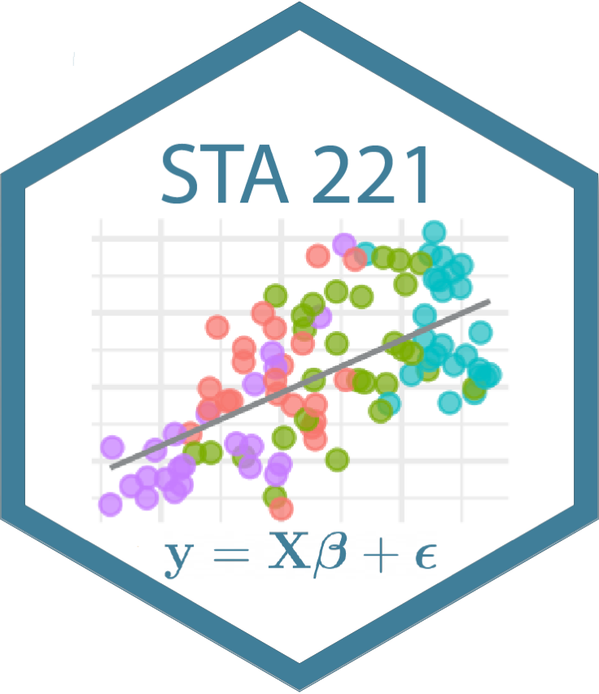

Logistic regression
Prediction + Assessment
Nov 17, 2026
Announcements
Project presentations in lab Monday, November 23
Statistics experience due Tuesday, November 24
Project draft + peer review in lab Monday, November 30
Computational set up
Topics
Computing predicted probabilities from the logistic regression model
Using predicted probabilities to classify observations
Make decisions and assess model performance using
- Confusion matrix
- ROC curve
Data: Risk of coronary heart disease
This data set is from an ongoing cardiovascular study on residents of the town of Framingham, Massachusetts. We want to examine the relationship between various health characteristics and the risk of having heart disease.
high_risk: 1 = High risk of having heart disease in next 10 years, 0 = Not high risk of having heart disease in next 10 yearsage: Age at exam time (in years)totChol: Total cholesterol (in mg/dL)currentSmoker: 0 = nonsmoker; 1 = smoker
Univariate EDA

Bivariate EDA

Modeling risk of coronary heart disease
| term | estimate | std.error | statistic | p.value | conf.low | conf.high |
|---|---|---|---|---|---|---|
| (Intercept) | -6.638 | 0.372 | -17.860 | 0.000 | -7.374 | -5.917 |
| age | 0.082 | 0.006 | 14.430 | 0.000 | 0.071 | 0.093 |
| totChol | 0.002 | 0.001 | 2.001 | 0.045 | 0.000 | 0.004 |
| currentSmoker1 | 0.457 | 0.092 | 4.951 | 0.000 | 0.277 | 0.639 |
Interpret
totCholin terms of the odds of being high risk for heart disease.Interpret
currentSmoker1in terms of the odds of being high risk for heart disease.
Prediction and classification
We are often interested in using the model to classify observations, i.e., predict whether a given observation will have a 1 or 0 response
For each observation
- Use the logistic regression model to calculate the predicted log-odds the response for the \(i^{th}\) observation is 1
- Use the log-odds to calculate the predicted probability the \(i^{th}\) observation is 1
- Then, use the predicted probability to classify the observation as having a 1 or 0 response using some predefined threshold
Augmented data frame
# A tibble: 4,190 × 10
high_risk age totChol currentSmoker .fitted .resid .hat .sigma .cooksd
<fct> <dbl> <dbl> <fct> <dbl> <dbl> <dbl> <dbl> <dbl>
1 0 39 195 0 -3.06 -0.302 0.000594 0.890 6.94e-6
2 0 46 250 0 -2.38 -0.420 0.000543 0.890 1.25e-5
3 0 48 245 1 -1.77 -0.560 0.000527 0.890 2.24e-5
4 1 61 225 1 -0.751 1.51 0.00164 0.889 8.70e-4
5 0 46 285 1 -1.86 -0.539 0.000830 0.890 3.25e-5
6 0 43 228 0 -2.67 -0.366 0.000546 0.890 9.43e-6
7 1 63 205 0 -1.08 1.66 0.00154 0.889 1.15e-3
8 0 45 313 1 -1.88 -0.532 0.00127 0.890 4.86e-5
9 0 52 260 0 -1.87 -0.535 0.000542 0.890 2.08e-5
10 0 43 225 1 -2.22 -0.454 0.000532 0.890 1.44e-5
# ℹ 4,180 more rows
# ℹ 1 more variable: .std.resid <dbl>Predicted log-odds
# A tibble: 5 × 1
.fitted
<dbl>
1 -3.06
2 -2.38
3 -1.77
4 -0.751
5 -1.86 Observation 1
\[ \text{logit}(\hat{\pi}_i) = \log\Big(\frac{\hat{\pi}_i}{1- \hat{\pi}_i}\Big) = -3.06 \]
Predicted odds
# A tibble: 5 × 1
.fitted
<dbl>
1 -3.06
2 -2.38
3 -1.77
4 -0.751
5 -1.86 Observation 1
\[ \text{predicted odds} = \frac{\hat{\pi}_i}{1- \hat{\pi}_i} = \exp\{-3.06\} = 0.0469 \]
Predicted probability
# A tibble: 5 × 1
.fitted
<dbl>
1 -3.06
2 -2.38
3 -1.77
4 -0.751
5 -1.86 Observation 1
\[\hat{\pi}_i = \frac{\hat{\text{odds}}_i}{1+\hat{\text{odds}}_i} = \frac{\exp\{-3.06\}}{1 + \exp\{-3.06\}}= 0.045 \]
Predicted probabilities in R
Compute predicted probabilities by adding type.predict = "response" argument in augment()
Predicted probabilities for Observations 1 -5
# A tibble: 5 × 1
.fitted
<dbl>
1 0.0446
2 0.0845
3 0.145
4 0.321
5 0.135 Classifying observations
- An individual has a predicted probability of 0.045. Would you consider this person high risk for heart disease?
- An individual has a predicted probability of 0.321. Would you consider this person high risk for heart disease?

Classifying observations
You would like to determine a threshold for classifying individuals as high risk or not high risk.
What considerations would you make in determining the threshold?
Classify using 0.5 as threshold
We can use a threshold of 0.5 to classify observations.
If \(\hat{\pi}_i > 0.5\), classify as 1
If \(\hat{\pi}_i \leq 0.5\), classify as 0
# A tibble: 5 × 3
high_risk .fitted pred_class
<fct> <dbl> <fct>
1 0 0.0446 0
2 0 0.0845 0
3 0 0.145 0
4 1 0.321 0
5 0 0.135 0 Confusion matrix
A confusion matrix is a \(2 \times 2\) table that compares the predicted and actual classes. We can produce this matrix using the conf_mat() function in the yardstick package (part of tidymodels).
Visualize confusion matrix

Using the confusion matrix
Truth
Prediction 0 1
0 3553 635
1 2 0The accuracy of this model with a classification threshold of 0.5 is
\[ \text{accuracy} = \frac{3553 + 0}{3553 + 635 + 2 + 0} = 0.848 \]
Using the confusion matrix
Truth
Prediction 0 1
0 3553 635
1 2 0The misclassification rate of this model with a threshold of 0.5 is
\[ \text{misclassification} = \frac{635 + 2}{3553 + 635 + 2 + 0} = 0.152 \]
Using the confusion matrix
Truth
Prediction 0 1
0 3553 635
1 2 0Accuracy is 0.848 and the misclassification rate is 0.152.
What is the limitation of solely relying on accuracy and misclassification to assess the model performance?
What is the limitation of using a single confusion matrix to assess the model performance?
Sensitivity and specificity
True/false positive/negative
| Not high risk \((y_i = 0)\) | High risk \((y_i = 1)\) | |
|---|---|---|
| Classified not high risk \((\hat{\pi}_i \leq \text{threshold})\) | True negative (TN) | False negative (FN) |
| Classified high risk \((\hat{\pi}_i > \text{threshold})\) | False positive (FP) | True positive (TP) |
\(\text{accuracy} = \frac{TN + TP}{TN + TP + FN + FP}\)
\(\text{misclassification} = \frac{FN + FP}{TN+ TP + FN + FP}\)
False negative rate
| Not high risk \((y_i = 0)\) | High risk \((y_i = 1)\) | |
|---|---|---|
| Classified not high risk \((\hat{\pi}_i \leq \text{threshold})\) | True negative (TN) | False negative (FN) |
| Classified high risk \((\hat{\pi}_i > \text{threshold})\) | False positive (FP) | True positive (TP) |
False negative rate: Proportion of actual positives that were classified as negatives
- P(classified not high risk | high risk) = \(\frac{FN}{TP + FN}\)
False positive rate
| Not high risk \((y_i = 0)\) | High risk \((y_i = 1)\) | |
|---|---|---|
| Classified not high risk \((\hat{\pi}_i \leq \text{threshold})\) | True negative (TN) | False negative (FN) |
| Classified high risk \((\hat{\pi}_i > \text{threshold})\) | False positive (FP) | True positive (TP) |
False positive rate: Proportion of actual negatives that were classified as positives
- P(classified high risk | not high risk) = \(\frac{FP}{TN + FP}\)
Sensitivity
| Not high risk \((y_i = 0)\) | High risk \((y_i = 1)\) | |
|---|---|---|
| Classified not high risk \((\hat{\pi}_i \leq \text{threshold})\) | True negative (TN) | False negative (FN) |
| Classified high risk \((\hat{\pi}_i > \text{threshold})\) | False positive (FP) | True positive (TP) |
Sensitivity: Proportion of actual positives that were correctly classified as positive
Also known as true positive rate (TPR) and recall
P(classified high risk | high risk) = 1 − False negative rate
Specificity
| Not high risk \((y_i = 0)\) | High risk \((y_i = 1)\) | |
|---|---|---|
| Classified not high risk \((\hat{\pi}_i \leq \text{threshold})\) | True negative (TN) | False negative (FN) |
| Classified high risk \((\hat{\pi}_i > \text{threshold})\) | False positive (FP) | True positive (TP) |
Specificity: Proportion of actual negatives that were correctly classified as negative
- P(classified not high risk | not high risk) = 1 − False positive rate
Practice
Truth
Prediction 0 1
0 3553 635
1 2 0Calculate the
- False negative rate
- False positive rate
- Sensitivity
- Specificity
Using metrics to select model and threshold
| Metric | Guidance for use |
|---|---|
| Accuracy | For balanced data, use only in combination with other metrics. Avoid using for imbalanced data. |
| Sensitivity (true positive rate) | Use when false negatives are more “expensive” than false positives. |
| False positive rate | Use when false positives are more “expensive” than false negatives. |
| Precision = \(\frac{TP}{TP + FP}\) | Use when it’s important for positive predictions to be accurate. |
This table is a modification of work created and shared by Google in the Google Machine Learning Crash Course.
Choosing a classification threshold
A doctor plans to use your model to determine which patients are high risk for heart disease. The doctor will recommend a treatment plan for high risk patients.
Would you want sensitivity to be high or low? What about specificity?
What are the trade-offs associated with each decision?
ROC curve
So far the model assessment has depended on the model and selected threshold. The receiver operating characteristic (ROC) curve allows us to assess the model performance across a range of thresholds.

x-axis: 1 - Specificity (False positive rate)
y-axis: Sensitivity (True positive rate)
Which corner of the plot indicates the best model performance?
ROC curve

ROC curve in R
ROC curve in R
Sample from roc_curve_data
# A tibble: 10 × 3
.threshold specificity sensitivity
<dbl> <dbl> <dbl>
1 0.0544 0.103 0.980
2 0.0658 0.181 0.959
3 0.0829 0.304 0.910
4 0.135 0.578 0.715
5 0.191 0.749 0.509
6 0.218 0.799 0.416
7 0.218 0.799 0.413
8 0.259 0.874 0.294
9 0.267 0.895 0.265
10 0.276 0.910 0.239
Area under the curve
The area under the curve (AUC) can be used to assess how well the logistic model fits the data
AUC=0.5: model is a very bad fit (no better than a coin flip)
AUC close to 1: model is a good fit
Recap
Calculated predicted probabilities from the logistic regression model
Used predicted probabilities to classify observations
Made decisions and assessed model performance using
- Confusion matrix
- ROC curve
Before next class
- Complete Lecture 23 prepare
